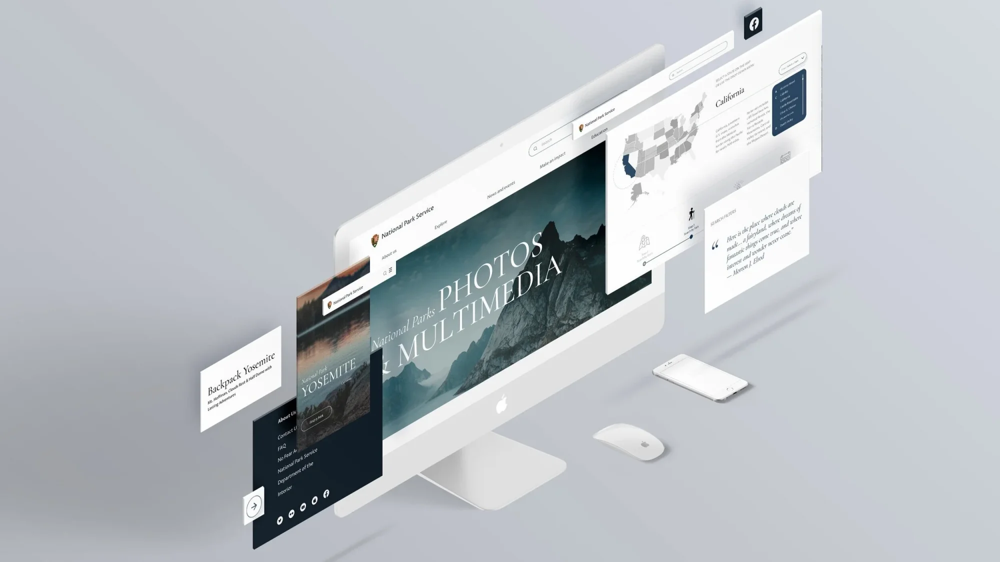
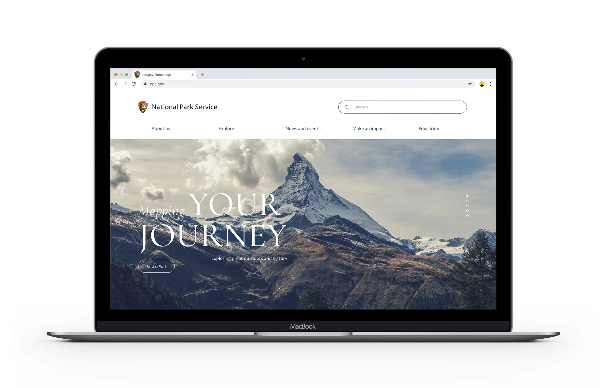
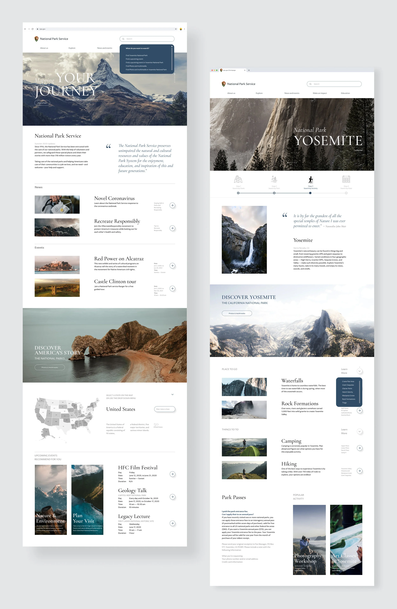
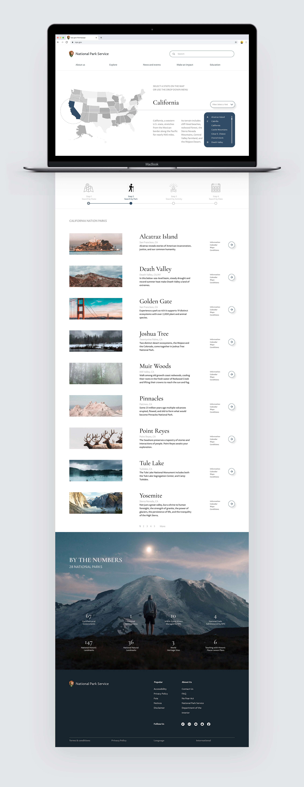
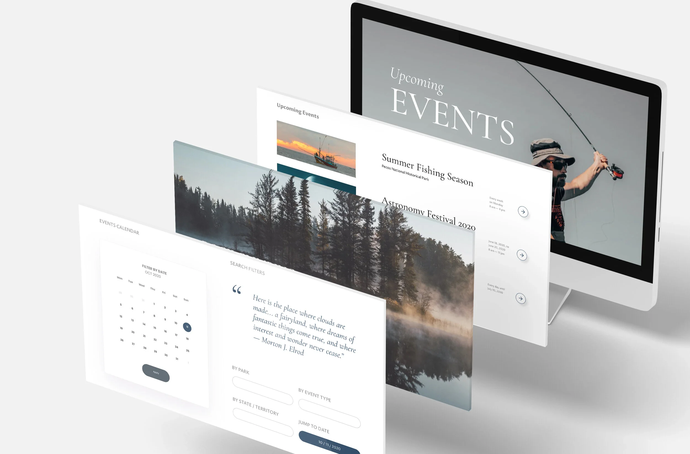
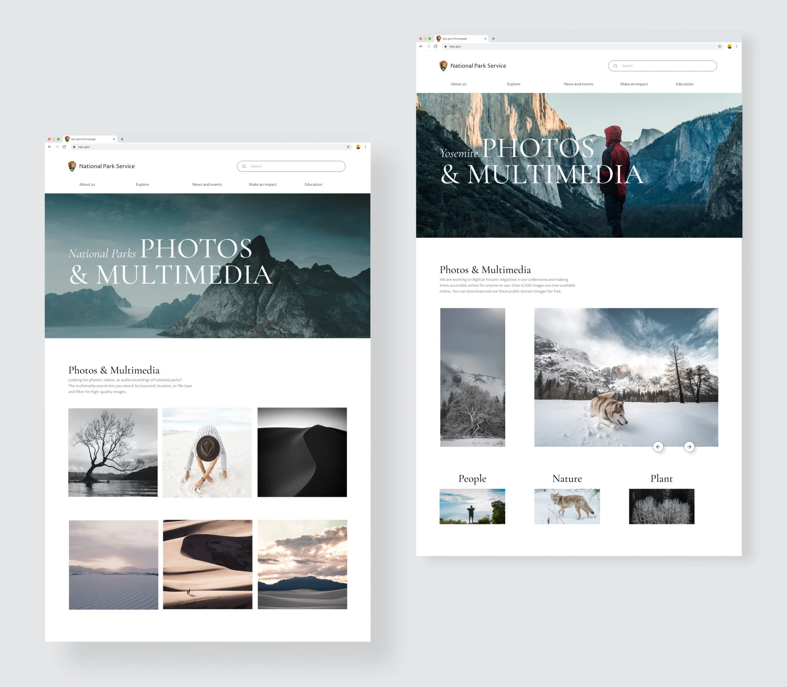

Overview
為熱愛戶外的人，重新設計國家公園的入口。
國家公園管理局（NPS）是美國內政部轄下管理國家公園的機構。我們因為對戶外、自然與健行的嚮往而選擇了這個網站 —— nps.gov 需要一次「拉皮」：既反映國家公園的美與樂趣，也有效傳遞使用者需要的資訊。
我們的成果幫助內政部達成自然資源與文化遺產的保育及管理，並提供自然災害的科學資訊。透過一個互動性強、促成人與自然對話的網站，讓喜愛健行與露營的人和自然更靠近 —— 也讓公眾教育與資源保育得以延續給下一個世代。
Design
用地圖，按州探索公園。
使用者測試發現，大家喜歡用地圖了解公園的位置：選擇想去的州，就能篩選出該州的公園，逐步縮小探索範圍。






Learn More